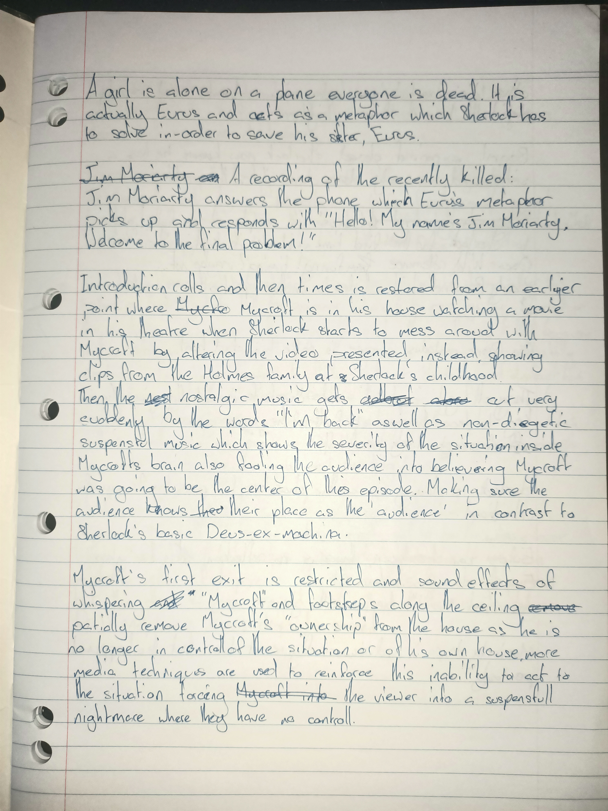
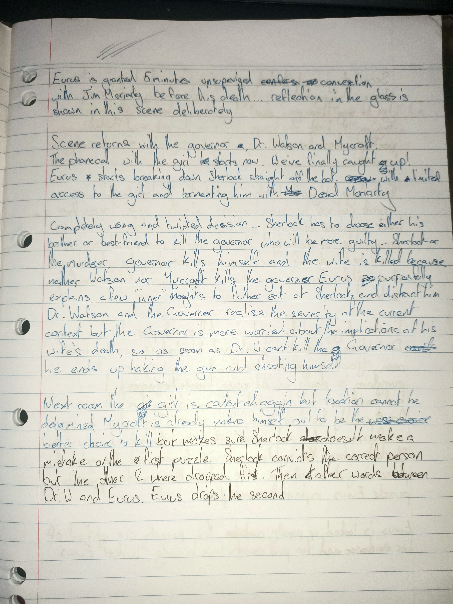

Literary Article
You wouldn’t steal a car. You wouldn’t steal a handbag. You wouldn’t steal a movie. But you can, not really but it’s perfectly legal, let me elaborate.
Crime fiction is a category that covers a complex range of extremely popular media genres whose sole purpose is to engulf the audience in the thrill and
terror of being a criminal all while they’re sitting on a couch sipping a cuppa: I told you, perfectly legal! Detective fiction is a branch of crime fiction
with ‘early ancestors emerging through the 18th and 19th centuries’ (Harcher, 2009), excellent examples of it being, Agatha Christie’s Yellow Iris (1937)
and Sir Arthur Conan Doyle’s - who will be impolitely addressed as Doyle from now on - The Final Problem and was later given a BBC TV
adaptation in 2017; and, although being written a long time ago, both authors' works heavily influence modern literature (Nathan, 2022) (The History Press,
2022). In both Agatha Christie’s, Yellow Iris and The Final Problem - a Sherlock episode written by Steven Moffat and Mark Gatiss – seeking justice is a
form of leisure, degenerating into vigilantism, although, Sherlock’s run-in with ‘unconditional love’ ends up clashing with his relationships, testing his
mental fortitude, contrasting with Hercule Poirot, who has a ‘jolly good time’ solving a “Yellow Iris” mystery without emotional complications.
Playing Detective
Both sleuths begin each investigation for recreational purposes, avoiding the need for authorities or legal action, both resulting in unfinished or bittersweet
endings. “For recreational purposes?” that’s extremely scandalous and far-fetched for a sleuth! How could I possibly reach a conclusion like that? Let's take a
look at the most obvious example. In Yellow Iris, the detective, Hercule Poirot says it himself - within the first page of the story! Hercule Poirot is at home
when a phone rings in the midst of the night; as he moves to pick-up the phone, he excitedly murmurs to himself a horrific fictional case which he pretends is
the subject of the call, and, after ‘smiling at the pleasing conceit and lifting the receiver,’ he discovers that it is in fact, a new case full of serotonin,
dopamine and adrenaline – whoops, I meant scandal and justice! After this, the setting is moved to Jardin des Cygnes (Fandom, 2022)(Fandom, 2022). Here, the
story really picks up and the suspects are brought into the picture, specifically emphasizing Mr. Barton Russell, the perpetrator, who makes the painfully
indiscreet “arrangement” with the restaurant buskers which act as his window to kill his target, Pauline Weatherby. Unfortunately for Mr. Russell, his plan is
foiled and mocked, afterwards; however, this is where Hercule Poirot’s fascination with ’playing detective’ really steals the show. Pauline is almost a victim
of murder, and in her most agitated state, she is given the authority to make a just decision, whether or not Mr. Barton Russell is prosecuted for his crimes;
obviously she makes a rushed choice and tells him to leave the country, ’she didn’t want a scandal.’ Then, Poirot makes another statement completely contradicting
justice, sealing the deal for the, ”unfinished or bittersweet ending” business, “you had better go quickly [...] I advise you to be careful in future,” announcing
that there will be a second chance to commit a murder. This is supported when Agatha Christie finalises the story with lyrics from a very depressing song which,
paradoxically, alludes to future acts driven by the depressive power of love: I thought Pauline didn’t want a scandal?!? In Sherlock it’s a little more cryptic.
In the beginning of the Final Problem, Mycroft is watching a film when text appears in front of him on screen as well as a swift change in non-diegetic sound
which syncs the audience’s emotions with the fear and loss of control as Mycroft navigates his own house trying to piece together what ever he can to defend
himself, locking the audience in a familiar feeling of being in a nightmare with zero control. Afterwards, Sherlock hypnotises Mycroft into leaking information
about their sister, Eurus Holmes, her existence having been kept a secret from Sherlock. Mission accomplished! Now that Sherlock knows the truth, the actors and
strategies to fool Mycroft are exposed, and everyone exits the scene in a very comedic way. At this moment, the emotion of the audience is replicating that of
Sherlock, excitement and banter. But, wait a moment, I thought Sherlock is only just discovering that key memories of his sister had been stolen from him and
she is being kept in an offshore government black-site and maximum-security facility called Sherrinford (an allusion to Sherrinford Holmes, a proposed elder
brother to Sherlock and Mycroft found in Doyle’s early notes); he shouldn’t be excited! A jump cut throws the audience further into the story where Sherlock
and Dr. Watson - Sherlock’s ‘partner in crime’ - are hijacking a boat to infiltrate Sherrinford. This unorthodox method must be a ’nod’ to Doyle’s profession
as a surgeon onboard a whaling ship, since there was no need for Sherlock to do so, for Mycroft could have easily been granted access, he is still treated as
a superior to the governor of Sherrinford. This is illustrated once Mycroft reveals the governor’s foolishness and lectures him while the camera is, not gradually
zoomed in, but rather, slowly moved towards Mycroft, creating an intimidating aura which inflates and emphasizes his facial expressions as he ’rips into’ the
governor for not ensuring his sister‘s safety - a different effect from if only the focal length of the lens was modulated throughout the scene. All these
unorthodox events reflect the excitement of Mycroft, Watson and Sherlock whilst carrying out the mission, specifically that of Sherlock who has made his way
past the guards by acting as a hunchback local, resuming his normal posture and mannerisms before completely leaving the guards’ field of view! This recklessness
could have blown his cover, but it’s a technique which synchronises Mycroft and Watson’s excitement with Sherlock’s and the audience’s. Eurus immediately acts
on the trio, taunting them by kidnapping them, using quotes from dead Moriarty, and with several mini cases they must solve to save a young girl trapped on an
out-of-control plane in the air. As it turns out, that girl is just a metaphor for Eurus’ mental state – yes, this is all in one episode - and after incorrectly
evaluated and rushed plot point after another – caused by the BBC story writers losing track of Doyle’s original stories a few episodes ago - neither Sherlock,
Dr. Watson, Mycroft nor Eurus’ life situation changes much at all after committing a multitude of crimes due to the absence of justice, leading to a very
bittersweet and unfinished ’vibe’ to the Final Problem. It seems that the BBC directors are were more after a ‘money grab’ rather than pursuing what true
classical crime fiction should deliver: satisfying, sustainable justice for those who have suffered.
“Just smile and wave boys, smile and wave.”
Hercule Poirot’s ‘spot the pathetic killer’ investigation goes perfectly to plan, and this affords him to remain collected and composed; conversely, Sherlock’s
confidence quickly runs out as he’s forced to face a twisted vigilante, who manipulates him into derailing major aspects of his life including delivering a fair
outcome. Barton Russel’s plan is foiled and mocked when Hercule Poirot makes the horrifically ‘pregnant’ statement, ”your plan has miscarried,” a powerful metaphor
at the beginning of his monologue, explaining Russell’s secret plan, step by step. Although in his monologue, Hercule Poirot’s explanation for his solution is
significantly simpler and shorter than the explanation of Russell’s plan to murder, this is used to belittle flustered Russel which at face value, is extremely
anti-climactic for such a suspenseful and cryptic introductory sentence marked by repetition and allusion, “At once … it’s life or death … the Jardin des Cygnes
... at once … table with yellow irises …"; it also speaks to how laid-back Poirot is during this case. The same nonchalant attitude is once again obvious when
the perpetrator excuses himself and Hercule is granted a dance with Lola Valdez who had – previous to proving his intelligence – rejected the same request from
Poirot. This collected and composed approach is also evident in Sherlock’s behaviour until Eurus drags him through her second ‘escape room’, which contains several
clues to his task to force Molly Hooper to say that she loves him. Sherlock pieces together the puzzle and Eurus explains that a three-minute timer which is rigged
to explode, destroying her house with her inside, if the task isn’t complete. His shift in attitude is immediately obvious as a low-angle, close-up camera shot
stresses his regret and anxiety as he frantically tries to figure out a plan to minimize the emotional damage on Molly. During the scene, time moves slightly slower
than real world time, putting the audience in a trance led by Sherlock’s anxiety. His final stretch of determination withers as Molly refuses Sherlock’s requests
and she falls further out of love until the last two seconds when she gives in completely – shown by the same camera angle previously used to convey Sherlock’s
anxiety, but this time it focusses on Molly’s emotionless face, depicting a final breath of unison as their friendship dies; and gives him what he wants. A quick
shift in emotion from relief to self-hatred breaks Sherlock as Eurus explains that the explosives and thus, any reasoning for manipulating Molly did not exist,
sending him into a mental breakdown expressed by the lack of diegetic sound as the audience is engulfed by Sherlock’s decaying mental state. His anxiety compounded
by every mistake made follows Sherlock throughout the rest of the episode, causing more errors, and in the desperate attempt to maintain justice as well as a
forgiving attitude towards his sister, he fails at doing both.
“There's nothing like Love for making you” a bad detective.
You wouldn’t steal a car. You wouldn’t steal a handbag. You wouldn’t steal a movie. But you do take it upon yourself who lives and dies, and you would enjoy -
a little bit too much - the process of doing so. At least that’s what Sherlock Holmes and Hercule Poirot seem to be doing, and it’s part of the excitement that
these two stories offer their readers. Ultimately, no matter how tortured and imperfect, justice is, at least partially, delivered, but, the struggles, twists and
turns of the investigation and the laws that are broken in an attempt to uphold the law, creates excitement and engagement which keep the readers on the edge of
their seats - that’s the power of crime fiction, and I dare say, this mix of putting the world to right and the imperfect means to do so will continue to attract
and intoxicate readers for many more years to come!
References
Arthur Conan Doyle - The Official Site of the Sir Arthur Conan Doyle Literary Estate. (2022, 3 17). BIOGRAPHY. Retrieved from Arthur Conan Doyle - The Official Site of the Sir Arthur Conan Doyle Literary Estate: https://www.arthurconandoyle.com/biography.html
Devdiscourse News Desk. (2022, 3 11). Is Sherlock Season 5 still on the cards? Current status & more details! Retrieved from Devdiscourse: https://www.devdiscourse.com/article/entertainment/1859950-is-sherlock-season-5-still-on-the-cards-current-status-more-details#:~:text=According%20to%20several%20reports%2C%20the,on%20Sherlock%2C%22%20he%20said.
Fandom. (2022, 3 10). Jardin des Cygnes. Retrieved from Fandom: https://agathachristie.fandom.com/wiki/Jardin_des_Cygnes
Harcher, C. (2009). The development of crime fiction. GRIN Verlag.
IMDb. (2022, 3 17). Mark Gatiss. Retrieved from IMDb: https://www.imdb.com/name/nm0309693/?ref_=tt_ov_wr
IMDb. (2022, 3 17). Sherlock. Retrieved from IMDb: https://www.imdb.com/title/tt1475582/
IMDb. (2022, 3 17). Steven Moffat. Retrieved from IMDb: https://www.imdb.com/name/nm0595590/?ref_=tt_ov_wr
Nathan, R. (2022, 2 28). Ultra-Influencers: The Two British Fictional Victorians that Changed Japan. Retrieved from Red Circle: https://www.redcircleauthors.com/news-and-views/ultra-influencers-the-two-british-fictional-victorians-that-changed-japan/
Romano, A. (2022, 3 11). 5 mistakes Sherlock made in its journey from high entertainment to convoluted spectacle. Retrieved from Vox: https://www.vox.com/culture/2017/1/18/14295716/sherlock-season-four-review-plot-holes
The History Press. (2022, 2 28). Queen of Crime: Agatha’s influence. Retrieved from The History Press: https://www.thehistorypress.co.uk/articles/queen-of-crime-agatha-s-influence/
Annotated Texts
Hercule Poirot stretched out his feet towards the electric radiator set in the
wall. Its neat arrangement of red hot bars pleased his orderly mind.
“A coal fire,” he mused to himself, “was always shapeless and haphazard!
Never did it achieve the symmetry.”
The telephone bell rang. Poirot rose, glancing at his watch as he did so. The
time was close on half past eleven. He wondered who was ringing him up at this
hour. It might, of course, be a wrong number.
“And it might,” he murmured to himself with a whimsical smile, “be a
millionaire newspaper proprietor, found dead in the library of his country house,
with a spotted orchid clasped in his left hand and a page torn from a cookbook
pinned to his breast.”
Smiling at the pleasing conceit, he lifted the receiver.
Immediately a voice spoke—a soft husky woman’s voice with a kind of
desperate urgency about it.
“Is that M. Hercule Poirot? Is that M. Hercule Poirot?”
“Hercule Poirot speaks.”
“M. Poirot—can you come at once—at once—I’m in danger—in great
danger—I know it . . .”
Poirot said sharply:
“Who are you? Where are you speaking from?”
The voice came more faintly but with an even greater urgency.
“At once . . . it’s life or death . . . the Jardin des Cygnes . . . at once . . . table
with yellow irises . . .”
There was a pause—a queer kind of gasp—the line went dead.
Hercule Poirot hung up. His face was puzzled. He murmured between his
teeth:
“There is something here very curious.”
In the doorway of the Jardin des Cygnes, fat Luigi hurried forward.
“Buona sera, M. Poirot. You desire a table—yes?”
“No, no, my good Luigi. I seek here for some friends. I will look round—
perhaps they are not here yet. Ah, let me see, that table there in the corner with
the yellow irises—a little question by the way, if it is not indiscreet. On all the
other tables there are tulips—pink tulips—why on that one table do you have
yellow irises?”
Luigi shrugged his expressive shoulders.
“A command, Monsieur! A special order! Without doubt, the favourite
flowers of one of the ladies. That table it is the table of Mr. Barton Russell—an
American—immensely rich.”
“Aha, one must study the whims of the ladies, must one not, Luigi?”
“Monsieur has said it,” said Luigi.
“I see at that table an acquaintance of mine. I must go and speak to him.”
Poirot skirted his way delicately round the dancing floor on which couples
were revolving. The table in question was set for six, but it had at the moment
only one occupant, a young man who was thoughtfully, and it seemed
pessimistically, drinking champagne.
He was not at all the person that Poirot had expected to see. It seemed
impossible to associate the idea of danger or melodrama with any party of which
Tony Chapell was a member.
Poirot paused delicately by the table.
“Ah, it is, is it not, my friend Anthony Chapell?”
“By all that’s wonderful—Poirot, the police hound!” cried the young man.
“Not Anthony, my dear fellow—Tony to friends!”
He drew out a chair.
“Come, sit with me. Let us discourse of crime! Let us go further and drink to
crime.” He poured champagne into an empty glass. “But what are you doing in
this haunt of song and dance and merriment, my dear Poirot? We have no bodies
here, positively not a single body to offer you.”
Poirot sipped the champagne.
“You seem very gay, mon cher?”
“Gay? I am steeped in misery—wallowing in gloom. Tell me, you hear this
tune they are playing. You recognize it?”
Poirot hazarded cautiously:
“Something perhaps to do with your baby having left you?”
“Not a bad guess,” said the young man. “But wrong for once. ‘There’s
nothing like love for making you miserable!’ That’s what it’s called.”
“Aha?”
“My favourite tune,” said Tony Chapell mournfully. “And my favourite
restaurant and my favourite band—and my favourite girl’s here and she’s
dancing it with somebody else.”
“Hence the melancholy?” said Poirot.
“Exactly. Pauline and I, you see, have had what the vulgar call words. That is
to say, she’s had ninety-five words to five of mine out of every hundred. My five
are: ‘But, darling—I can explain.’—Then she starts in on her ninety-five again
and we get no further. I think,” added Tony sadly, “that I shall poison myself.”
“Pauline?” murmured Poirot.
“Pauline Weatherby. Barton Russell’s young sister-in-law. Young, lovely,
disgustingly rich. Tonight Barton Russell gives a party. You know him? Big
Business, clean-shaven American—full of pep and personality. His wife was
Pauline’s sister.”
“And who else is there at this party?”
“You’ll meet ’em in a minute when the music stops. There’s Lola Valdez—
you know, the South American dancer in the new show at the Metropole, and
there’s Stephen Carter. D’you know Carter—he’s in the diplomatic service. Very
hush-hush. Known as silent Stephen. Sort of man who says, ‘I am not a liberty to
state, etc, etc.’ Hullo, here they come.”
Poirot rose. He was introduced to Barton Russell, to Stephen Carter, to
Señora Lola Valdez, a dark and luscious creature, and to Pauline Weatherby, very
young, very fair, with eyes like cornflowers.
Barton Russell said:
“What, is this the great M. Hercule Poirot? I am indeed pleased to meet you,
sir. Won’t you sit down and join us? That is, unless—”
Tony Chapell broke in.
“He’s got an appointment with a body, I believe, or is it an absconding
financier, or the Rajah of Borrioboolagah’s great ruby?”
“Ah, my friend, do you think I am never off duty? Can I not, for once, seek
only to amuse myself?”
“Perhaps you’ve got an appointment with Carter here. The latest from the
UN International situation now acute. The stolen plans must be found or war will
be declared tomorrow!”
Pauline Weatherby said cuttingly:
“Must you be so completely idiotic, Tony?”
“Sorry, Pauline.”
Tony Chapell relapsed into crestfallen silence.
“How severe you are, Mademoiselle.”
“I hate people who play the fool all the time!”
“I must be careful, I see. I must converse only of serious matters.”
“Oh, no, M. Poirot. I didn’t mean you.”
She turned a smiling face to him and asked:
“Are you really a kind of Sherlock Holmes and do wonderful deductions?”
“Ah, the deductions—they are not so easy in real life. But shall I try? Now
then, I deduce—that yellow irises are your favourite flowers?”
“Quite wrong, M. Poirot. Lilies of the valley or roses.”
Poirot sighed.
“A failure. I will try once more. This evening, not very long ago, you
telephoned to someone.”
Pauline laughed and clapped her hands.
“Quite right.”
“It was not long after you arrived here?”
“Right again. I telephoned the minute I got inside the doors.”
“Ah—that is not so good. You telephoned before you came to this table?”
“Yes.”
“Decidedly very bad.”
“Oh, no, I think it was very clever of you. How did you know I had
telephoned?”
“That, Mademoiselle, is the great detective’s secret. And the person to whom
you telephoned—does the name begin with a P—or perhaps with an H?”
Pauline laughed.
“Quite wrong. I telephoned to my maid to post some frightfully important
letters that I’d never sent off. Her name’s Louise.”
“I am confused—quite confused.”
The music began again.
“What about it, Pauline?” asked Tony.
“I don’t think I want to dance again so soon, Tony.”
“Isn’t that too bad?” said Tony bitterly to the world at large.
Poirot murmured to the South American girl on his other side:
“Señora, I would not dare to ask you to dance with me. I am too much of the
antique.”
Lola Valdez said:
“Ah, it ees nonsense that you talk there! You are steel young. Your hair, eet is
still black!”
Poirot winced slightly.
“Pauline, as your brother-in-law and your guardian,” Barton Russell spoke
heavily, “I’m just going to force you onto the floor! This one’s a waltz and a
waltz is about the only dance I really can do.”
“Why, of course, Barton, we’ll take the floor right away.”
“Good girl, Pauline, that’s swell of you.”
They went off together. Tony tipped back his chair. Then he looked at
Stephen Carter.
“Talkative little fellow, aren’t you, Carter?” he remarked. “Help to make a
party go with your merry chatter, eh, what?”
“Really, Chapell, I don’t know what you mean?”
“Oh, you don’t—don’t you?” Tony mimicked him.
“My dear fellow.”
“Drink, man, drink, if you won’t talk.”
“No, thanks.”
“Then I will.”
Stephen Carter shrugged his shoulders.
“Excuse me, must just speak to a fellow I know over there. Fellow I was
with at Eton.”
Stephen Carter got up and walked to a table a few places away.
Tony said gloomily:
“Somebody ought to drown old Etonians at birth.”
Hercule Poirot was still being gallant to the dark beauty beside him.
He murmured:
“I wonder, may I ask, what are the favourite flowers of mademoiselle?”
“Ah, now, why ees eet you want to know?”
Lola was arch.
“Mademoiselle, if I send flowers to a lady, I am particular that they should be
flowers she likes.”
“That ees very charming of you, M. Poirot. I weel tell you—I adore the big
dark red carnations—or the dark red roses.”
“Superb—yes, superb! You do not, then, like yellow irises?”
“Yellow flowers—no—they do not accord with my temperament.”
“How wise . . . Tell me, Mademoiselle, did you ring up a friend tonight, since
you arrived here?”
“I? Ring up a friend? No, what a curious question!”
“Ah, but I, I am a very curious man.”
“I’m sure you are.” She rolled her dark eyes at him. “A vairy dangerous
man.”
“No, no, not dangerous; say, a man who may be useful—in danger! You
understand?”
Lola giggled. She showed white even teeth.
“No, no,” she laughed. “You are dangerous.”
Hercule Poirot sighed.
“I see that you do not understand. All this is very strange.”
Tony came out of a fit of abstraction and said suddenly:
“Lola, what about a spot of swoop and dip? Come along.”
“I weel come—yes. Since M. Poirot ees not brave enough!”
Tony put an arm round her and remarked over his shoulder to Poirot as they
glided off:
“You can meditate on crime yet to come, old boy!”
Poirot said: “It is profound what you say there. Yes, it is profound. . . .”
He sat meditatively for a minute or two, then he raised a finger. Luigi came
promptly, his wide Italian face wreathed in smiles.
“Mon vieux,” said Poirot. “I need some information.”
“Always at your service, Monsieur.”
“I desire to know how many of these people at this table here have used to
telephone tonight?”
“I can tell you, Monsieur. The young lady, the one in white, she telephoned
at once when she got here. Then she went to leave her cloak and while she was
doing that the other lady came out of the cloakroom and went into the telephone
box.”
“So the Señora did telephone! Was that before she came into the restaurant?”
“Yes, Monsieur.”
“Anyone else?”
“No, Monsieur.”
“All this, Luigi, gives me furiously to think!”
“Indeed, Monsieur.”
“Yes. I think, Luigi, that tonight of all nights, I must have my wits about me!
Something is going to happen, Luigi, and I am not at all sure what it is.”
“Anything I can do. Monsieur—”
Poirot made a sign. Luigi slipped discreetly away. Stephen Carter was
returning to the table.
“We are still deserted, Mr. Carter,” said Poirot.
“Oh—er—quite,” said the other.
“You know Mr. Barton Russell well?”
“Yes, known him a good while.”
“His sister-in-law, little Miss Weatherby, is very charming.”
“Yes, pretty girl.”
“You know her well, too?”
“Quite.”
“Oh, quite, quite,” said Poirot.
Carter stared at him.
The music stopped and the others returned.
Barton Russell said to a waiter:
“Another bottle of champagne—quickly.”
Then he raised his glass.
“See here, folks. I’m going to ask you to drink a toast. To tell you the truth,
there’s an idea back of this little party tonight. As you know, I’d ordered a table
for six. There were only five of us. That gave us an empty place. Then, by a very
strange coincidence, M. Hercule Poirot happened to pass by and I asked him to
join our party.
“You don’t know yet what an apt coincidence that was. You see that empty
seat tonight represents a lady—the lady in whose memory this party is being
given. This party, ladies and gentlemen, is being held in memory of my dear wife
—Iris—who died exactly four years ago on this very date!”
There was a startled movement round the table. Barton Russell, his face
quietly impassive, raised his glass.
“I’ll ask you to drink to her memory. Iris!”
“Iris?” said Poirot sharply.
He looked at the flowers. Barton Russell caught his glance and gently
nodded his head.
There were little murmurs round the table.
“Iris—Iris. . . .”
Everyone looked startled and uncomfortable.
Barton Russell went on, speaking with his slow monotonous American
intonation, each word coming out weightily.
“It may seem odd to you all that I should celebrate the anniversary of a death
in this way—by a supper party in a fashionable restaurant. But I have a reason—
yes, I have a reason. For M. Poirot’s benefit, I’ll explain.”
He turned his head towards Poirot.
“Four years ago tonight, M. Poirot, there was a supper party held in New
York. At it were my wife and myself, Mr. Stephen Carter, who was attached to
the Embassy in Washington, Mr. Anthony Chapell, who had been a guest in our
house for some weeks, and Señora Valdez, who was at that time enchanting New
York City with her dancing. Little Pauline here—” he patted her shoulder “—
was only sixteen but she came to the supper party as a special treat. You
remember, Pauline?”
“I remember—yes.” Her voice shook a little.
“M. Poirot, on that night a tragedy happened. There was a roll of drums and
the cabaret started. The lights went down—all but a spotlight in the middle of
the floor. When the lights went up again, M. Poirot, my wife was seen to have
fallen forward on the table. She was dead—stone dead. There was potassium
cyanide found in the dregs of her wine glass, and the remains of the packet was
discovered in her handbag.”
“She had committed suicide?” said Poirot.
“That was the accepted verdict . . . It broke me up, M. Poirot. There was,
perhaps, a possible reason for such an action—the police thought so. I accepted
their decision.”
He pounded suddenly on the table.
“But I was not satisfied . . . No, for four years I’ve been thinking and
brooding—and I’m not satisfied: I don’t believe Iris killed herself. I believe, M.
Poirot, that she was murdered—by one of those people at the table.”
“Look here, sir—”
Tony Chapell half sprung to his feet.
“Be quiet, Tony,” said Russell. “I haven’t finished. One of them did it—I’m
sure of that now. Someone who, under cover of the darkness, slipped the half
emptied packet of cyanide into her handbag. I think I know which of them it
was. I mean to know the truth—”
Lola’s voice rose sharply.
“You are mad—crazee—who would have harmed her? No, you are mad. Me,
I will not stay—”
She broke off. There was a roll of drums.
Barton Russell said:
“The cabaret. Afterwards we will go on with this. Stay where you are, all of
you. I’ve got to go and speak to the dance band. Little arrangement I’ve made
with them.”
He got up and left the table.
“Extraordinary business,” commented Carter. “Man’s mad.”
“He ees crazee, yes,” said Lola.
The lights were lowered.
“For two pins I’d clear out,” said Tony.
“No!” Pauline spoke sharply. Then she murmured, “Oh, dear—oh, dear—”
“What is it, Mademoiselle?” murmured Poirot.
She answered almost in a whisper.
“It’s horrible! It’s just like it was that night—”
“Sh! Sh!” said several people.
Poirot lowered his voice.
“A little word in your ear.” He whispered, then patted her shoulder. “All will
be well,” he assured her.
“My God, listen,” cried Lola.
“What is it, Señora?”
“It’s the same tune—the same song that they played that night in New York.
Barton Russell must have fixed it. I don’t like this.”
“Courage—courage—”
There was a fresh hush.
A girl walked out into the middle of the floor, a coal black girl with rolling
eyeballs and white glistening teeth. She began to sing in a deep hoarse voice—a
voice that was curiously moving.
I’ve forgotten you
I never think of you
The way you walked
The way you talked
The things you used to say
I’ve forgotten you
I never think of you
I couldn’t say
For sure today
Whether your eyes were blue or grey
I’ve forgotten you
I never think of you.
I’m through
Thinking of you
I tell you I’m through
Thinking of you. . . .
You . . . you . . . you. . . .
The sobbing tune, the deep golden Negro voice had a powerful effect. It
hypnotized—cast a spell. Even the waiters felt it. The whole room stared at her,
hypnotized by the thick cloying emotion she distilled.
A waiter passed softly round the table filling up glasses, murmuring
“champagne” in an undertone but all attention was on the one glowing spot of
light—the black woman whose ancestors came from Africa, singing in her deep
voice:
I’ve forgotten you
I never think of you
Oh, what a lie
I shall think of you, think of you, think of you
till I die. . . .
The applause broke out frenziedly. The lights went up. Barton Russell came
back and slipped into his seat.
“She’s great, that girl—” cried Tony.
But his words were cut short by a low cry from Lola.
“Look—look. . . .”
And then they all saw. Pauline Weatherby dropped forward onto the table.
Lola cried:
“She’s dead—just like Iris—like Iris in New York.”
Poirot sprang from his seat, signing to the others to keep back. He bent over
the huddled form, very gently lifted a limp hand and felt for a pulse.
His face was white and stern. The others watched him. They were paralysed,
held in a trance.
Slowly, Poirot nodded his head.
“Yes, she is dead—la pauvre petite. And I sitting by her! Ah! but this time
the murderer shall not escape.”
Barton Russell, his face grey, muttered:
“Just like Iris . . . She saw something—Pauline saw something that night—
Only she wasn’t sure—she told me she wasn’t sure . . . We must get the police
. . . Oh, God, little Pauline.”
Poirot said:
“Where is her glass?” He raised it to his nose. “Yes, I can smell the cyanide.
A smell of bitter almonds . . . the same method, the same poison. . . .”
He picked up her handbag.
“Let us look in her handbag.”
Barton Russell cried out:
“You don’t believe this is suicide, too? Not on your life.”
“Wait,” Poirot commanded. “No, there is nothing here. The lights went up,
you see, too quickly, the murderer had not time. Therefore, the poison is still on
him.”
“Or her,” said Carter.
He was looking at Lola Valdez.
She spat out:
“What do you mean—what do you say? That I killed her—eet is not true—
not true—why should I do such a thing!”
“You had rather a fancy for Barton Russell yourself in New York. That’s the
gossip I heard. Argentine beauties are notoriously jealous.”
“That ees a pack of lies. And I do not come from the Argentine. I come from
Peru. Ah—I spit upon you. I—” She lapsed into Spanish.
“I demand silence,” cried Poirot. “It is for me to speak.”
Barton Russell said heavily:
“Everyone must be searched.”
Poirot said calmly.
“Non, non, it is not necessary.”
“What d’you mean, not necessary?”
“I, Hercule Poirot, know. I see with the eyes of the mind. And I will speak!
M. Carter, will you show us the packet in your breast pocket?”
“There’s nothing in my pocket. What the hell—”
“Tony, my good friend, if you will be so obliging.”
Carter cried out:
“Damn you—”
Tony flipped the packet neatly out before Carter could defend himself.
“There you are, M. Poirot, just as you said!”
“IT’S A DAMNED LIE,” cried Carter.
Poirot picked up the packet, read the label.
“Cyanide potassium. The case is complete.”
Barton Russell’s voice came thickly.
“Carter! I always thought so. Iris was in love with you. She wanted to go
away with you. You didn’t want a scandal for the sake of your precious career so
you poisoned her. You’ll hang for this, you dirty dog.”
“Silence!” Poirot’s voice rang out, firm and authoritative. “This is not
finished yet. I, Hercule Poirot, have something to say. My friend here, Tony
Chapell, he says to me when I arrive, that I have come in search of crime. That,
it is partly true. There was crime in my mind—but it was to prevent a crime that
I came. And I have prevented it. The murderer, he planned well—but Hercule
Poirot he was one move ahead. He had to think fast, and to whisper quickly in
Mademoiselle’s ear when the lights went down. She is very quick and clever,
Mademoiselle Pauline, she played her part well. Mademoiselle, will you be so
kind as to show us that you are not dead after all?”
Pauline sat up. She gave an unsteady laugh.
“Resurrection of Pauline,” she said.
“Pauline—darling.”
“Tony!”
“My sweet!”
“Angel.”
Barton Russell gasped.
“I—I don’t understand. . . .”
“I will help you to understand, Mr. Barton Russell. Your plan has
miscarried.”
“My plan?”
“Yes, your plan. Who was the only man who had an alibi during the
darkness. The man who left the table—you, Mr. Barton Russell. But you
returned to it under cover of the darkness, circling round it, with a champagne
bottle, filling up glasses, putting cyanide in Pauline’s glass and dropping the half
empty packet in Carter’s pocket as you bent over him to remove a glass. Oh, yes,
it is easy to play the part of a waiter in darkness when the attention of everyone
is elsewhere. That was the real reason for your party tonight. The safest place to
commit a murder is in the middle of a crowd.”
“What the—why the hell should I want to kill Pauline?”
“It might be, perhaps, a question of money. Your wife left you guardian to
her sister. You mentioned that fact tonight. Pauline is twenty. At twenty-one or
on her marriage you would have to render an account of your stewardship. I
suggest that you could not do that. You have speculated with it. I do not know,
Mr. Barton Russell, whether you killed your wife in the same way, or whether
her suicide suggested the idea of this crime to you, but I do know that tonight
you have been guilty of attempted murder. It rests with Miss Pauline whether
you are prosecuted for that.”
“No,” said Pauline. “He can get out of my sight and out of this country. I
don’t want a scandal.”
“You had better go quickly, Mr. Barton Russell, and I advise you to be
careful in future.”
Barton Russell got up, his face working.
“To hell with you, you interfering little Belgian jackanapes.”
He strode out angrily.
Pauline sighed.
“M. Poirot, you’ve been wonderful. . . .”
“You, Mademoiselle, you have been the marvellous one. To pour away the
champagne, to act the dead body so prettily.”
“Ugh,” she shivered, “you give me the creeps.”
He said gently:
“It was you who telephoned me, was it not?”
“Yes.”
“Why?”
“I don’t know. I was worried and—frightened without knowing quite why I
was frightened. Barton told me he was having this party to commemorate Iris’
death. I realized he had some scheme on—but he wouldn’t tell me what it was.
He looked so—so queer and so excited that I felt something terrible might
happen—only, of course, I never dreamed that he meant to—to get rid of me.”
“And so, Mademoiselle?”
“I’d heard people talking about you. I thought if I could only get you here
perhaps it would stop anything happening. I thought that being a—a foreigner—
if I rang up and pretended to be in danger and—and made it sound mysterious
—”
“You thought the melodrama, it would attract me? That is what puzzled me.
The message itself—definitely it was what you call ‘bogus’—it did not ring true.
But the fear in the voice—that was real. Then I came—and you denied very
categorically having sent me a message.”
“I had to. Besides, I didn’t want you to know it was me.”
“Ah, but I was fairly sure of that! Not at first. But I soon realized that the
only two people who could know about the yellow irises on the table were you
or Mr. Barton Russell.”
Pauline nodded.
“I heard him ordering them to be put on the table,” she explained. “That, and
his ordering a table for six when I knew only five were coming, made me
suspect—” She stopped, biting her lip.
“What did you suspect, Mademoiselle?”
She said slowly:
“I was afraid—of something happening—to Mr. Carter.”
Stephen Carter cleared his throat. Unhurriedly but quite decisively he rose
from the table.
“Er—h’m—I have to—er—thank you, Mr. Poirot. I owe you a great deal.
You’ll excuse me, I’m sure, if I leave you. Tonight’s happenings have been—
rather upsetting.”
Looking after his retreating figure, Pauline said violently:
“I hate him. I’ve always thought it was—because of him that Iris killed
herself. Or perhaps—Barton killed her. Oh, it’s all so hateful. . . .”
Poirot said gently:
“Forget, Mademoiselle . . . forget . . . Let the past go . . . Think only of the
present. . . .”
Pauline murmured, “Yes—you’re right. . . .”
Poirot turned to Lola Valdez.
“Señora, as the evening advances I become more brave. If you would dance
with me now—”
“Oh, yes, indeed. You are—you are ze cat’s whiskers, M. Poirot. I inseest on
dancing with you.”
“You are too kind, Señora.”
Tony and Pauline were left. They leant towards each other across the table.
“Darling Pauline.”
“Oh, Tony, I’ve been such a nasty spiteful spitfiring little cat to you all day.
Can you ever forgive me?”
“Angel! This is Our Tune again. Let’s dance.”
They danced off, smiling at each other and humming softly:
There’s nothing like Love for making you miserable
There’s nothing like Love for making you blue
Depressed
Possessed
Sentimental
Temperamental
There’s nothing like Love
For getting you down.
There’s nothing like Love for driving you crazy
There’s nothing like Love for making you mad
Abusive
Allusive
Suicidal
Homicidal
There’s nothing like Love
There’s nothing like Love. . . .




 Season 4 Trailer:
Season 4 Trailer: